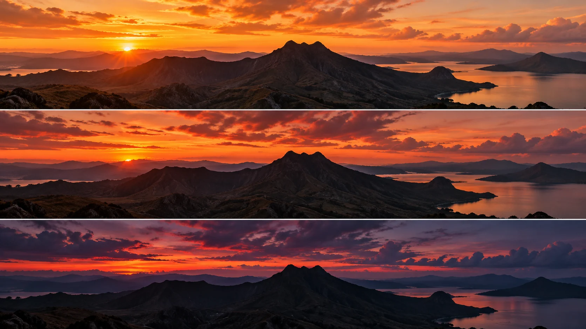

G22 · 중급 · 일반 드론
에트나 일몰: 카메라를 멈추기로 한 선택
고정 시점의 장점과 드리프트, 고정 노출의 연속성과 어두운 끝 장면을 함께 평가한다.
그림에서 확인할 세 가지움직이지 않는 선택도 연출이다.
1남아 있는 햇빛
위 그림에서 산등성이와 수면에 남은 빛을 본다. 구름과 지형의 세부가 함께 읽히는 출발 상태를 확인한다.
2사라지는 광량
가운데 그림에서는 태양이 능선에 가까워지고 전경이 어두워진다. 지형의 위치보다 밝기와 하늘색의 변화가 관심을 끈다.
3끝의 정보
아래 그림에서 산이 어두운 윤곽으로 남는 부분을 본다. 실루엣으로 충분한 장면인지 지표의 세부를 더 보존해야 하는지 판단한다.
촬영 설계
촬영을 이렇게 설계한다
주제를 시간에 둔다
본문은 빠른 하이퍼랩스 이동이 일몰 자체를 방해한다고 보고 고정 시점을 택했다고 설명한다. 카메라가 변화를 만들지 않아도 구름과 빛이 장면의 움직임을 담당할 수 있다.
연속성과 밝기를 절충한다
제작자는 노출 변경의 밝기 점프를 피하려 고정 노출을 선택했다. 그러나 기대했던 마을 조명이 충분히 켜지지 않아 마지막이 어두워졌다는 결과도 함께 공개했다.
교육 적용 · 끝을 먼저 본다
일몰 후 남길 정보가 산 윤곽인지 마을의 세부인지 먼저 정한다. 끝이 너무 어두우면 촬영 구간을 줄이거나 노출 변경과 후반 연결을 계획하는 다른 안을 비교한다.
에트나와 마을을 앞에 두고 구름과 일몰의 변화에 집중한 고정 시점 타임랩스 시연이다.
원본 영상에트나 일몰: 카메라를 멈추기로 한 선택
1. 움직임의 주체
산의 위치와 구름의 변화를 비교한다. 카메라 이동 없이도 장면이 충분히 변하는지 판단한다.
2. 어두운 끝
산 표면이 사라지는 구간을 본다. 실루엣이 의도인지 정보 손실인지 구별한다.
3. 시간의 속도
영상에서 일몰 전환이 너무 빠른지 본다. 구름의 속도와 전체 변화의 길이를 함께 평가한다.
재생이 제한되면 원본 영상 새 창을 이용하세요.
제작진 설명 · 한국어 요약 번역
제작 설명 · 고정 시점과 노출값
촬영 선택
VicVideoPic은 DJI Mavic 3으로 에트나와 마을이 보이는 일몰을 찍었다.
빠른 하이퍼랩스는 일몰에서 시선을 빼앗는다고 보고 고정 시점을 택했다.
노출값
ISO 100에 조리개 f/11, 셔터 1/20초이며 첫 시도에는 ND 필터가 없었다.
조리개를 조인 것은 조명에 별 모양 빛갈림을 얻기 위해서였다.
기대
노출은 바꾸지 않았고 마을 조명이 끝 화면을 밝혀 주길 기대했다.
제작진 설명 · 한국어 요약 번역
제작 설명 · 결과와 후반
간격
사진 간격은 5초였고 구름은 빨리 움직였지만 클립은 약 13초로 짧았다.
후반
사진은 Luminar Neo에서 보정해 JPEG 시퀀스로 Premiere Pro에 넣었다.
호버링 중 생긴 드리프트는 Warp Stabilizer로 안정화했다.
평가와 대안
마을 조명이 켜지지 않아 끝이 어두웠고 낮밤 전환도 조금 빨랐다.
대안으로 3초나 4초 간격을 제안하며 ND 64는 시험하지 않았다.
Kling 프롬프트단문 인과 체인 · 16:9
내가 직접 만들어 본다
카메라와 노출을 고정하고 하늘과 빛만 움직여, 해가 지면서 끝 장면이 실루엣으로 남는 인과를 지시한다.
- S01산등성이와 수면 위로 저녁 해가 낮게 걸려 있다.
- S02영상은 하나의 연속 쇼트다.
- S03드론은 끝까지 같은 자리에서 같은 방향을 바라본다.
- S04카메라가 움직이지 않기 때문에 변화는 하늘과 빛에서 나온다.
- S05처음 10초 동안 구름이 흐르고 수면에 남은 빛이 반짝인다.
- S06다음 10초 동안 해가 능선에 가까워진다.
- S07해가 낮아지자 전경이 점점 어두워진다.
- S08하늘색이 주황에서 짙은 보라로 바뀐다.
- S09마지막 10초 동안 해가 능선 뒤로 넘어간다.
- S10빛이 사라지자 산은 어두운 윤곽으로 남는다.
- S11마을의 불빛은 작게만 켜진다.
- S12그 결과 끝 장면은 산의 실루엣을 중심으로 읽힌다.
[네거티브]
- 해가 이미 져서 시작부터 어두운 것 금지
- 컷이 바뀌어 다른 시간대 장면이 이어지는 것 금지
- 드론이 천천히 떠내려가거나 방향이 조금씩 바뀌는 것 금지
- 카메라 이동이 일몰보다 먼저 눈에 띄는 것 금지
- 구름과 수면 빛이 멈춘 사진처럼 정지하는 것 금지
- 해가 능선에서 멀어지거나 위로 올라가는 것 금지
- 전경 밝기가 갑자기 꺼지거나 튀는 것 금지
- 하늘색이 한 번에 바뀌어 단계가 사라지는 것 금지
- 해가 능선 앞에 떠 있거나 갑자기 사라지는 것 금지
- 산이 어둠에 묻혀 윤곽조차 사라지는 것 금지
- 마을 불빛이 크게 번져 산보다 눈에 띄는 것 금지
- 끝 장면이 완전한 암흑이어서 읽을 정보가 없는 것 금지
결과에서 볼 것
- 카메라 위치와 방향이 끝까지 고정되었는가
- 해가 낮아지며 전경이 단계적으로 어두워졌는가
- 끝 장면에서 산의 윤곽이 읽혔는가